The recipe box that knows what's in your kitchen — and the whole household's kitchen.
Get Pantryful on the App Store
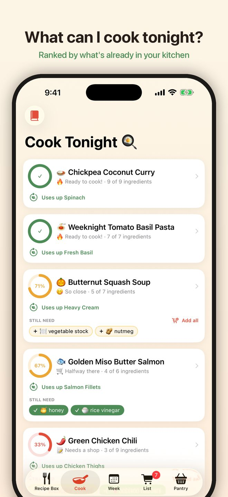
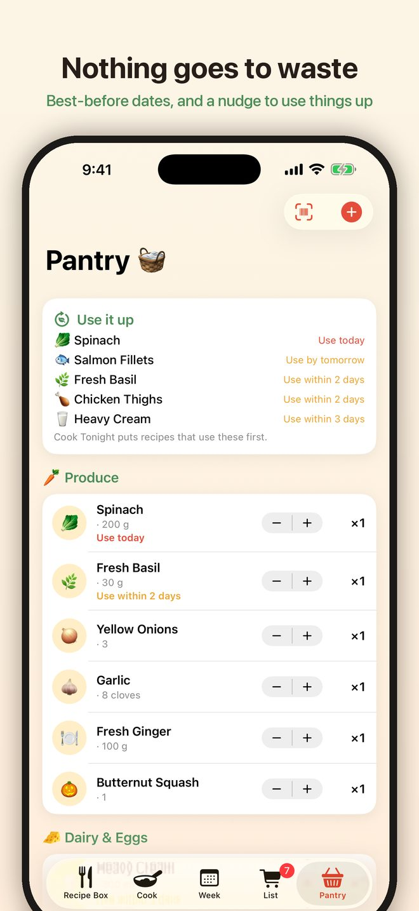
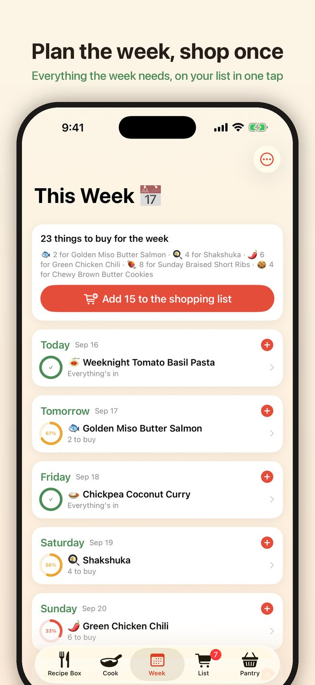
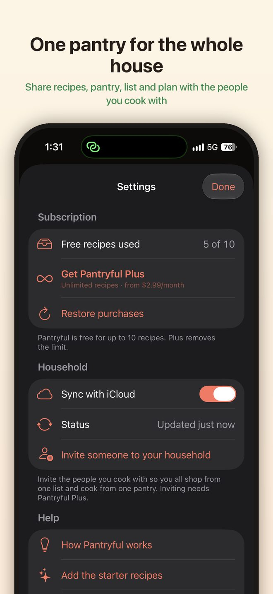
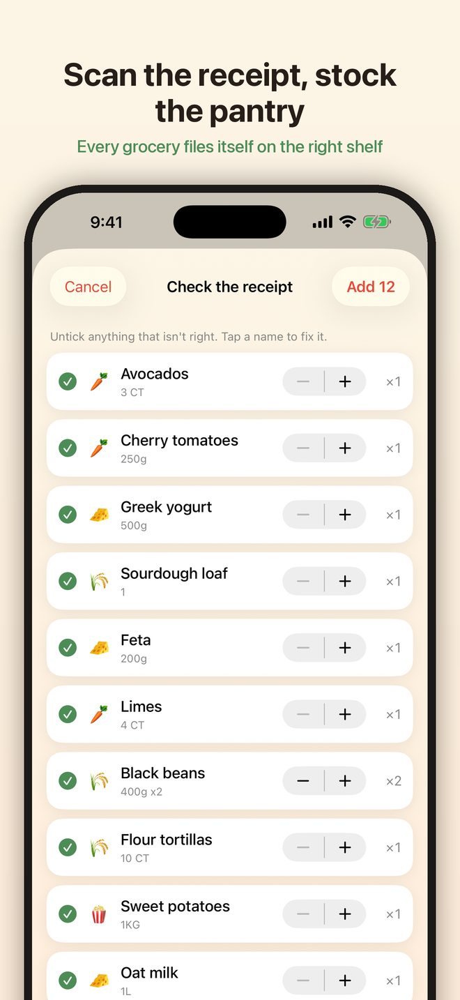
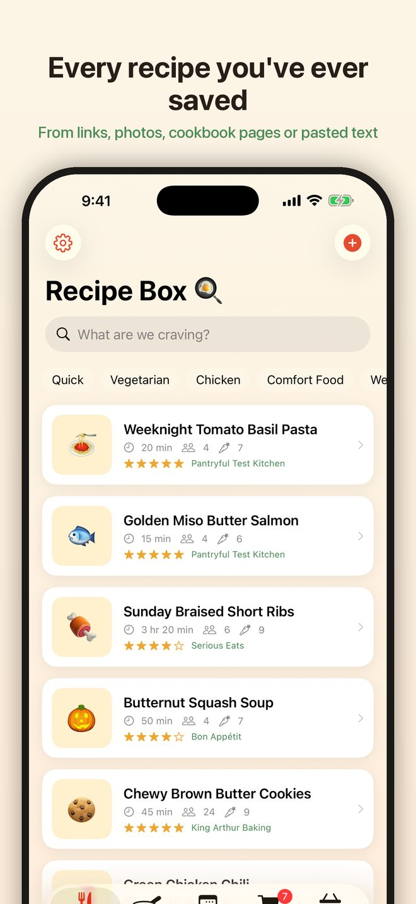
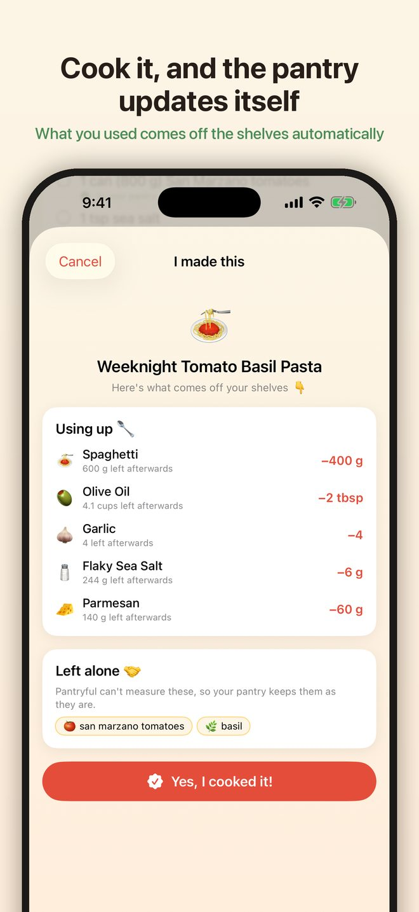
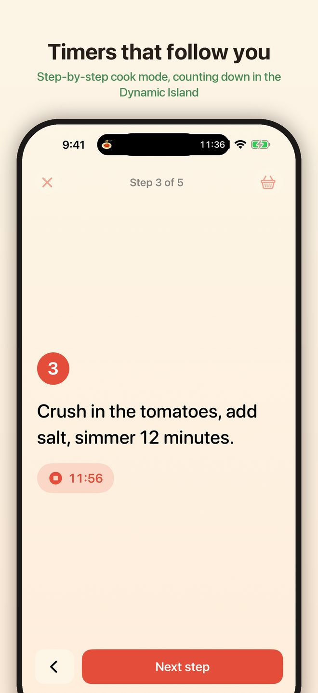
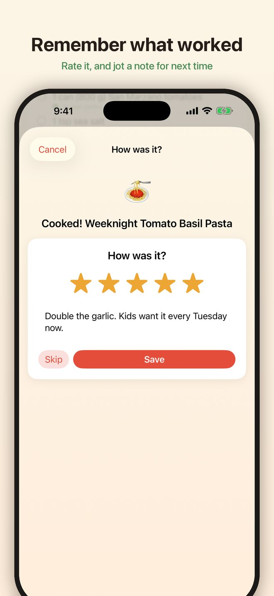
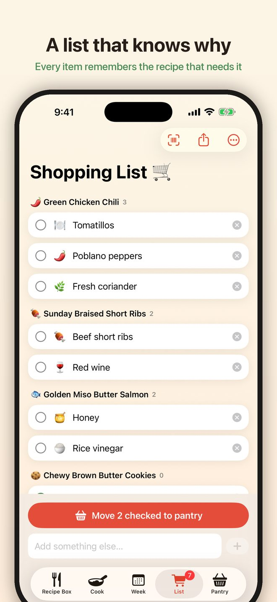
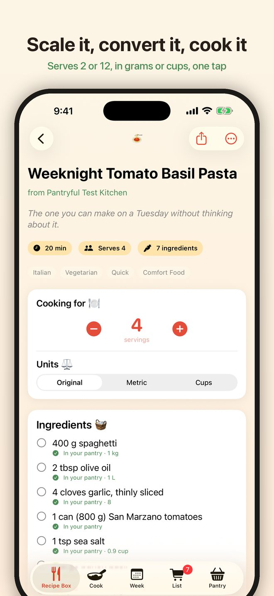
Swipe or scroll for more.
Open the Recipe Box tab and tap +. Paste a link and Pantryful reads the ingredients, steps, timing and servings from the page. You can also share a page to Pantryful from Safari, paste the plain text of a recipe from a message, or photograph a cookbook page — several pages, if the recipe runs long. Or choose Write it myself and type it in.
From the Pantry tab, tap + and choose Scan a receipt to photograph a grocery receipt: every food line files itself on the right shelf, and anything you already have is topped up. Single items can be scanned by barcode or added by hand. Give perishables a best-before date and the Use it up list at the top of the pantry keeps an eye on them.
The Cook tab ranks your recipes by how close you are to being able to make them, and moves recipes that use up something about to expire to the top. A dish that needs one thing tells you which thing and puts it on the list with a tap. You can also ask Siri: "What can I cook tonight in Pantryful?"
The Week tab is a seven-day board. Put recipes on days and Pantryful works out everything the week needs that your pantry doesn't have. One tap adds it all to the shopping list.
Open a recipe and tap Cook step by step. Steps with a time in them get a timer that keeps counting on the Lock Screen and in the Dynamic Island. When you're done, tap I made this: what you used comes off the pantry shelves, and you can rate the recipe and leave yourself a note for next time.
Open Settings (the gear on the Recipe Box) and turn on Sync with iCloud. Your recipes, pantry, list and plan stay the same on every device signed into your iCloud account. Pantryful Plus members can invite other people to the household, so everyone works from one pantry and one list.
Some sites block automated readers, and a few publish their recipes in a format Pantryful can't read. When that happens the import fails rather than saving something half-finished. Try copying the recipe text and pasting it into the import box instead, photograph the page, or add it with Write it myself. If a site you use often doesn't work, tell us which one.
Pantryful needs camera permission to read barcodes, receipts and cookbook pages. Open the iOS Settings app, scroll to Pantryful, and turn Camera on. You can also choose a photo from your library instead of using the camera.
Receipts are read on your iPhone, and abbreviations like "ORG SPNCH 200G" don't always come out right. On the Check the receipt screen, tap a name to fix it, untick anything that isn't food, and adjust the count before adding. Nothing is uploaded anywhere.
Product details come from Open Food Facts, a community database. Its coverage is very good for packaged groceries but not complete, and it varies by country. When a code isn't listed you can add the item by hand — the name and size are all Pantryful needs.
Pantryful matches on the name, so a pantry item called Passata won't be recognised as the tinned tomatoes a recipe asks for. Renaming the pantry item to match the words a recipe would use usually fixes it. Brand names don't interfere with matching.
Conversions are ingredient-aware. A cup of flour and a cup of water don't weigh the same, so Pantryful converts dry goods by weight rather than treating every ingredient as a liquid. The Original setting always shows the recipe exactly as it was written.
Both devices need to be signed into the same iCloud account, with iCloud Drive turned on for Pantryful (iOS Settings, your name, iCloud, Apps Using iCloud). Changes usually arrive within a few seconds of opening the app. If you were invited to someone else's household, accept the invitation link on each device you want in it.
Siri learns the phrases the first time the app runs after installing. Open Pantryful once, then try "What can I cook tonight in Pantryful?" or "Add to my Pantryful list". The Cook Tonight widget is added from the Home Screen widget gallery, like any other widget.
No account. Pantryful is free, and the free recipe box holds up to 10 of your own recipes. Pantryful Plus removes that limit and lets you invite others to your household. Everything else — pantry matching, scanning, planning, cook mode and the shopping list — is included either way.
Everything is stored on your device, and in your own private iCloud if sync is on. It is included in your device backup, so restoring a backup to a new phone brings your recipes with it. See the privacy policy for the full detail.
Delete individual recipes and pantry items inside the app, or remove the app from your iPhone to delete all of it at once. If sync was on, turning it off in Settings and removing the app clears the iCloud copy as well.
If something is broken or a site won't import, the details that help most are:
Get in touch: Open an issue on GitHub
Reports are tracked publicly on GitHub, so you can see what's already been reported and follow a fix. A free GitHub account is needed to post one. Please don't include anything private in a report.